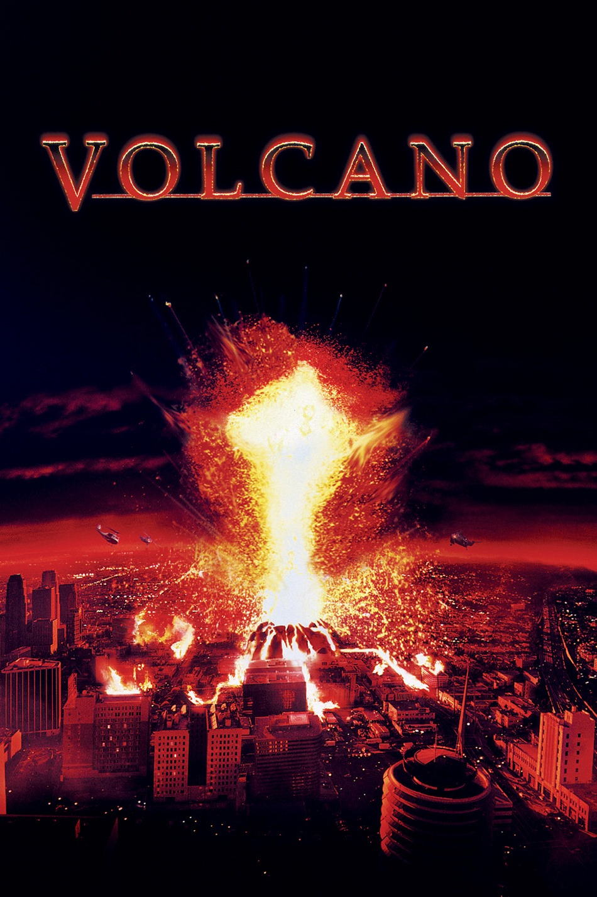

Мировая премьера: 25 апреля 1997
Слоган: Это жарче, чем ад...
Сюжет: Лос-Анджелес на своём веку достаточно повидал стихийных бедствий: землетрясений, пожаров, наводнений. Но сейчас "городу ангелов" предстоит столкнуться с самой страшной из когда-либо переживаемых им катастроф, которая грозит стереть его с лица земли. В одном из самых населённых районов Лос-Анджелеса внезапно пришёл в активное действие вулкан. Раскалённая, грозящая смертью лава уже начала выплёскиваться на улицы, загруженные автомобилями... Но, как всегда, герой появляется вовремя — на этот раз в облике мужественного офицера управления по чрезвычайным ситуациям, который возглавляет борьбу со стихией...
Режиссёр: Мик Джексон
В ролях: |
Томми Ли Джонс | Майк Рорк |
| Энн Хеч | Доктор Эми Барнс | |
| Дон Чидл | Эммит Рис | |
| Габи Хоффманн | Келли Рорк | |
| Жаклин Ким | Доктор Джей Калдер | |
| Джон Кэрролл Линч | Стэн Олбер | |
| Кит Дэвид | Лейтенант Эд Фокс | |
| Марселло Тедфорд | Кевин | |
| Джон Корбетт | Норман Калдер | |
| Майкл Рисполи | Гатор Харрис | |
| Лори Лэтэм | Рейчел | |
| Берт Крамер | Шеф пожарных | |
| Джеймс Дж. МакДональд | Терри Джаспер | |
| Дэйтон Калли | Роджер Лафер | |
| Ричард Шифф | Хаскинс |
Бюджет: $ 90 млн.
Кассовые сборы в США: $ 49 млн.
Кассовые сборы в мире: $ 123 млн.
Продолжительность: 1 ч. 38 мин.
Рейтинг: 5.6